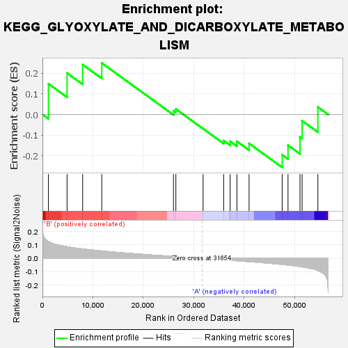

| | | Dataset | my.my.cls#B_versus_A.my.cls#B_versus_A_repos |
| Phenotype | my.cls#B_versus_A_repos |
| Upregulated in class | A |
| GeneSet | KEGG_GLYOXYLATE_AND_DICARBOXYLATE_METABOLISM |
| Enrichment Score (ES) | -0.2561582 |
| Normalized Enrichment Score (NES) | -0.62131095 |
| Nominal p-value | 0.8704454 |
| FDR q-value | 0.8909517 |
| FWER p-Value | 1.0 |
Table: GSEA Results Summary

Fig 1: Enrichment plot: KEGG_GLYOXYLATE_AND_DICARBOXYLATE_METABOLISM
Profile of the Running ES Score & Positions of GeneSet Members on the Rank Ordered List
| SYMBOL | TITLE | RANK IN GENE LIST | RANK METRIC SCORE | RUNNING ES | CORE ENRICHMENT | | 1 | HAO2 | na | 1185 | 0.125 | 0.1490 | Yes |
| 2 | PGP | na | 4877 | 0.086 | 0.2007 | Yes |
| 3 | AFMID | na | 7968 | 0.070 | 0.2414 | Yes |
| 4 | GRHPR | na | 11758 | 0.055 | 0.2493 | Yes |
| 5 | ACO1 | na | 25969 | 0.014 | 0.0173 | No |
| 6 | MDH2 | na | 26442 | 0.013 | 0.0262 | No |
| 7 | MDH1 | na | 31837 | -0.000 | -0.0685 | No |
| 8 | ACO2 | na | 35909 | -0.011 | -0.1262 | No |
| 9 | MTHFD2 | na | 37207 | -0.014 | -0.1302 | No |
| 10 | MTHFD2L | na | 38538 | -0.017 | -0.1301 | No |
| 11 | MTHFD1 | na | 40951 | -0.024 | -0.1403 | No |
| 12 | MTHFD1L | na | 47512 | -0.045 | -0.1954 | No |
| 13 | GLYCTK | na | 48668 | -0.050 | -0.1486 | No |
| 14 | CS | na | 51040 | -0.061 | -0.1083 | No |
| 15 | HYI | na | 51459 | -0.063 | -0.0304 | No |
| 16 | HAO1 | na | 54585 | -0.090 | 0.0360 | No |
Table: GSEA details [plain text format]
Fig 2: KEGG_GLYOXYLATE_AND_DICARBOXYLATE_METABOLISM
Blue-Pink O' Gram in the Space of the Analyzed GeneSet
Fig 3: KEGG_GLYOXYLATE_AND_DICARBOXYLATE_METABOLISM: Random ES distribution
Gene set null distribution of ES for KEGG_GLYOXYLATE_AND_DICARBOXYLATE_METABOLISM